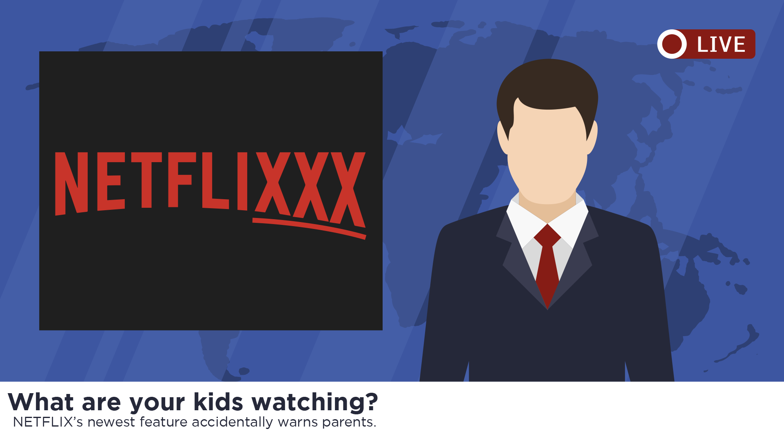
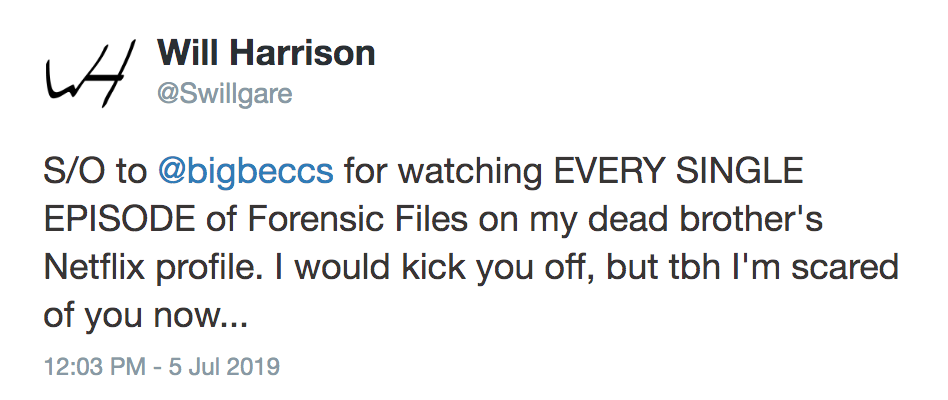
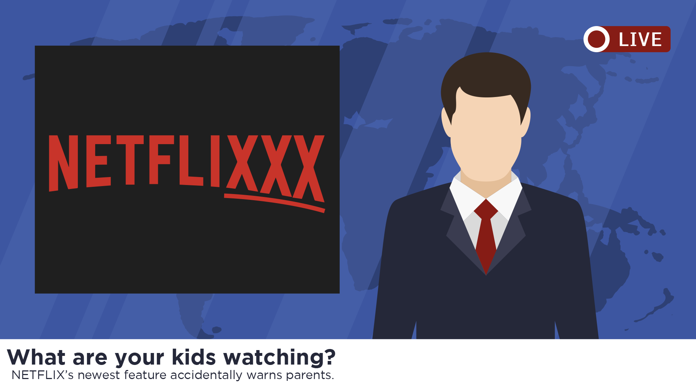
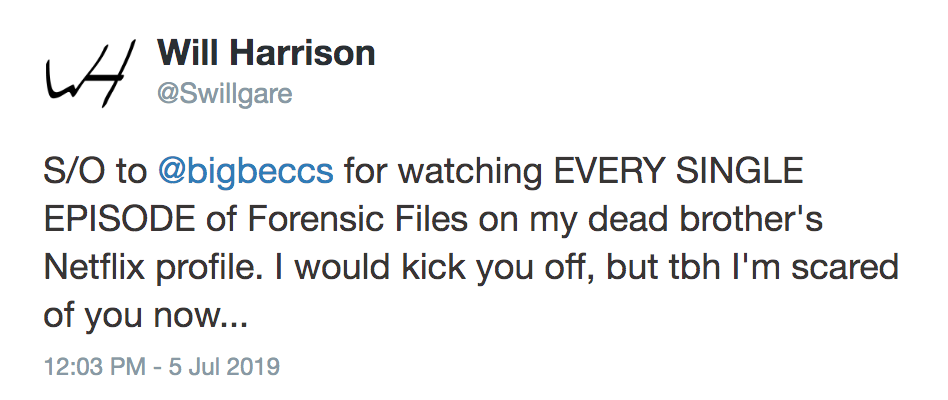

The Netflix Online Family Recommendation Engine Experiment (NOFREE) is an all-new feature designed to facilitate Netflix recommendations between users on a shared account.
In addition to allowing personal recommendations of specific titles, smart recommendations from your profile will also appear in your family’s Netflix feeds.
These smart recommendations work like Amazon Prime’s oder history & item suggestions... in that they’ll actually embarrass some users into getting their own accounts.
 


